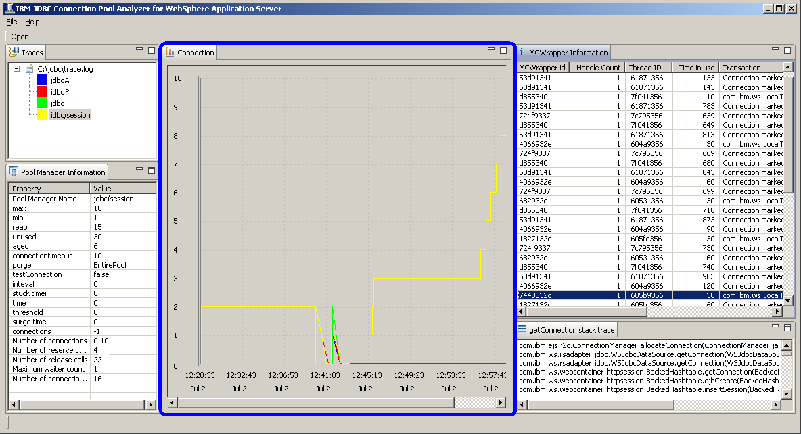

JDBC Connection View
JDBC Connection View is located on middle of the tool.
Number of JDBC connections are displayed along with time.
In the following screenshot, yellow line is climbing up to 8 JDBC connections around 12:57:43 July 2nd.
Data source, jdbc/session, has yellow mark.

You can move your mouse over the chart to display total number of JDBC connections in solid line and total number of multiple connections per thread in dotted line as well as the name of JDBC pool manager.
If you click on the chart, Multiple Connection View is displayed.